Boitatá
Cobra de fogo que protege a mata. Bênçãos de chamas e queimadura.
Lendas do folclore brasileiro
Um jogo de ação gratuito para jogar no navegador. Sobreviva às noites da Mata Fechada com a ajuda dos Encantados do folclore e enfrente o Barão.
JOGAR AGORAGratuito, sem instalar nada. Funciona melhor no computador (teclado e mouse) e também em controles.
Em Night Legends você é Jaci, uma jovem que volta para a casa da Vó Benta, no meio da floresta. Toda noite, criaturas surgem da mata e cercam a casa. Com a lamparina na mão, você luta, sobe de nível e escolhe bênçãos dos Encantados: os espíritos e lendas do folclore brasileiro que decidem ajudar você.
Cada noite é uma partida curta de ação. Você enfrenta ondas de bichos, derrota chefes e volta para a base, onde pode cuidar da horta, conversar com a Vó Benta, comprar itens do Seu Zé Raizeiro e fortalecer o altar dos Encantados. As escolhas de bênçãos mudam toda partida: cada lenda traz ataques automáticos, poderes de esquiva, defesa e golpes diferentes que se combinam.
A história avança até a noite 50, quando surge o buraco do Inferno, o caminho para enfrentar o Barão da Casa-Grande em uma luta final.
| Ação | Tecla |
|---|---|
| Mover | W A S D / setas |
| Atacar | Z / clique esquerdo |
| Esquivar | Espaço / clique direito |
| Poder | Q |
| Interagir / escolher bênção | E |
| Itens de combate | 1 2 3 4 |
| Inventário | I / Tab |
| Diário | J |
| Pausa | Esc |
Vinte lendas do folclore brasileiro oferecem bênçãos que mudam a forma de lutar. Cada uma tem dezenas de ataques e poderes.
Cobra de fogo que protege a mata. Bênçãos de chamas e queimadura.
O sedutor dos rios. Água, encanto e controle de multidões.
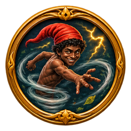
Redemoinhos e raios. Velocidade e dano em cadeia.
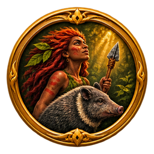
Guardiã da caça. Espinhos, pedras e proteção da natureza.
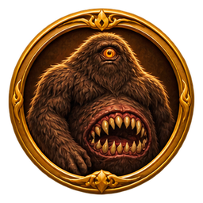
Gigante da floresta. Golpes pesados e abalos no chão.
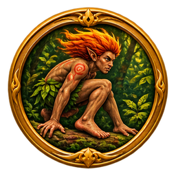
Pés virados e cipós. Raízes, sementes e rastros enganosos.
Mãe d'Água. Canto que encanta e correntezas que puxam.
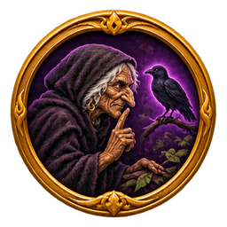
O assobio agourento. Maldições, confusão e medo.
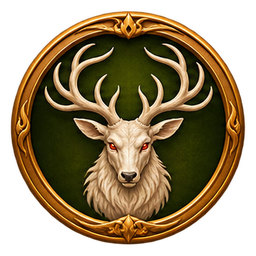
Espírito do cervo branco. Marcas, galhadas e proteção da mata.
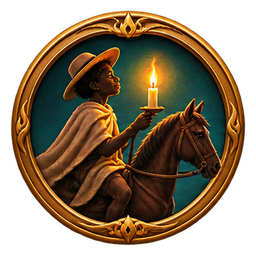
Luz, caminho e resgate. A vela que guia quem se perdeu.
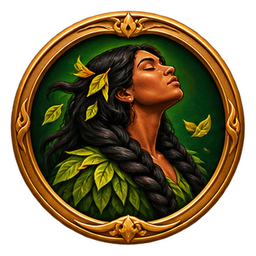
Tranças, cipós e trilhas falsas que prendem invasores.
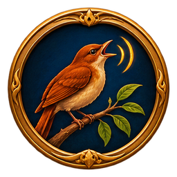
Ritmo e eco. Notas cortantes e canto que aumenta o crítico.
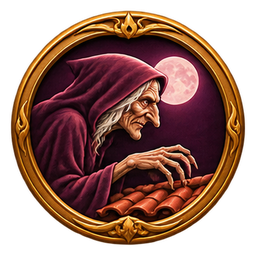
Sono, peso e pesadelo. Pisões do telhado e cobertores de chumbo.
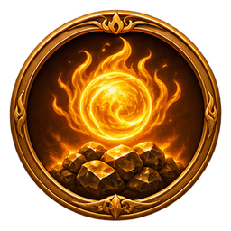
Minério, forja e ganância. Veios incandescentes e ouro extra.
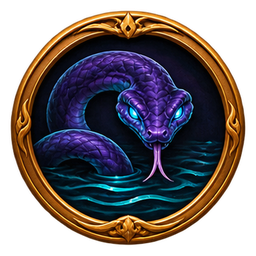
A Cobra-Grande. Pressão da água, escamas e correnteza.
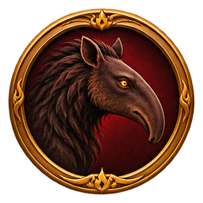
Caçada e perseguição. Garras que quebram a guarda.
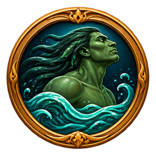
Remadas e domínio das margens. Ondas e barrancos.
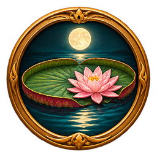
Reflexo e cura. Pétalas, luar e proteção da lagoa.
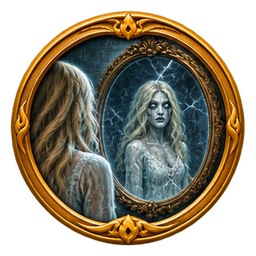
Medo e espelhos quebrados. Cacos que giram e gritos.
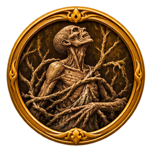
Morte e rastejo. Mãos secas, ossos e vida roubada.
A benzedeira que cuida da casa e acende a lamparina a cada noite.
Dono da venda: raízes, garrafadas e armas para a travessia.
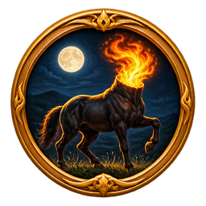
Uma das criaturas mais temidas das noites da Mata Fechada.
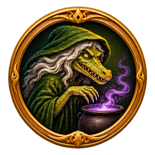
A bruxa do folclore, que ronda os pesadelos da floresta.
O senhor da Casa-Grande e o último inimigo da jornada.
O ranking global mostra a noite alcançada e o nível dos jogadores que entraram com a conta Google. Torneios com prêmio, quando houver, serão anunciados com regulamento próprio antes de começar.
Sim. Há anúncios no jogo, e é possível comprar joias opcionais por Pix.
Não. O jogo roda no navegador do computador. Use um navegador atualizado, como Chrome, Edge ou Firefox.
Sim, no navegador. Entrando com a conta Google, ele também fica salvo na nuvem.
Por e-mail: eduardosolifritz@gmail.com.